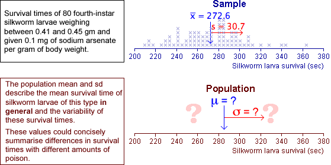

Examples

These examples show that we can focus on estimating one or two population parameters instead of trying to find the complete population distribution.
The data sets are described in the diagram.